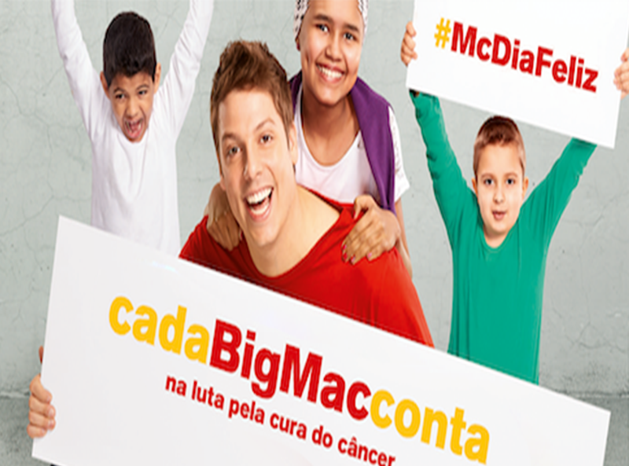

McDia Feliz: o evento premiado que arrecadou mais R$ 25 mi só em 2017
17 de Agosto de 2017 às 07:00
Pergunte por aí o que é o McDia Feliz. Dificilmente você vai encontrar alguém que não saiba a resposta. Realizada sempre no último domingo de agosto — mês do voluntariado —, a campanha, considerada a maior do país em prol de adolescentes e crianças com câncer, não é apenas sucesso de popularidade. Seus resultados são expressivos: nos últimos anos, tem arrecadado em média R$ 22 milhões em cada edição — desde 1988, quando foi lançada no Brasil, conseguiu mais de R$ 220 milhões. Em 2017 arrecadou o valor record de R$ 25.352.836,25
Não surpreende, portanto, que tenha vencido o prêmio ABCR 2017, da Associação Brasileira de Captadores de Recursos, na categoria "Melhor Evento de Captação". O que poucos sabem é que a data, na verdade, é apenas a face mais visível de um processo que começa meses antes, mais especificamente, em dezembro do ano anterior.
"O dia da campanha é marcado pela 'ocupação' de lojas por diversas instituições que lidam com o câncer infantojuvenil. Mas essa é a culminância de um caminho que se inicia com o lançamento de um edital no fim do ano", diz Helen Pedroso, gerente geral do Instituto Ronald McDonald, que organiza o evento no Brasil.
Quem já passou por algum dos mais de 880 restaurantes da rede McDonalds espalhados pelo país no McDia Feliz certamente encontrou um clima de festa, turbinado por voluntários animados e, eventualmente, celebridades.
O segredo da mobilização é ter meta. Em torno de 60 instituições participam a cada ano — para 2017, são 54, com 62 projetos. "As propostas passam por um conselho científico composto por médicos oncologistas e assistentes sociais, que avaliam, por exemplo, se elas estão de acordo com a demanda oncológica pediátrica da região onde serão executadas", afirma a gerente geral do Instituto Ronald McDonald.
Junho é o mês em que são anunciadas as organizações que estão habilitadas a participar do McDia Feliz. É também quando cada instituição sabe exatamente o valor que vai ter de captar. "Fazemos treinamentos para garantir uma uniformização da campanha, que ocorre em todo o Brasil", explica Helen.
A captação, na verdade, já começa nesse momento, com a venda antecipada de tickets que são trocados no dia da campanha por Big Macs. "Sabendo quanto necessitam arrecadar, as instituições têm metas do que precisam vender antes e no dia", continua.
E, de fato, a mobilização anterior é tão importante quanto o McDia Feliz em si, que neste ano será no dia 26 de agosto. Por ano, são comercializados um total de 1,5 milhão de lanches para a campanha, dos quais 900 mil são adquiridos com tickets vendidos por antecipação.
Na data do evento, cada organização fica responsável por 'ocupar' um determinado número de restaurantes, levando em conta sua capacidade de mobilização de voluntários. "O Grupo de Apoio ao Adolescente e à Criança com Câncer (Graacc), por exemplo, todo ano aumenta sua meta de estabelecimentos e consegue superá-la. Existem também franqueados que ajudam e acabam até mesmo participando do conselho de algumas organizações", diz Helen.
Já o Hospital do Câncer de Barretos vai além de sua cidade-sede. “Por causa dos contatos da direção, está também presente em restaurantes de Goiânia e de Palmas, no Tocantins”.
Se há uma preocupação com uma identidade única para a ação em todo o Brasil — esse ano, o humorista Fábio Porchat é o rosto nacional da campanha —, as características regionais são respeitadas na hora de mobilizar as celebridades participantes.
“No interior, por exemplo, é comum ver artistas sertanejos não conhecidos no resto do país, mas que são muito populares naquele local. Cabe a cada organização mobilizar sua rede de celebridades”, explica a gerente geral.
Surgimento no Brasil
O Instituto Ronald McDonald só chegou ao Brasil em 1999, e sua criação no país está entrelaçada a uma tragédia pessoal. “A organização lida com enfermidades infantis. Havia um casal, o Francisco e a Sônia Neves, cujo filho, o Marquinhos, foi diagnosticado com leucemia”, conta Helen.
O menino fez tratamento no Instituto Nacional de Câncer (Inca), no Rio de Janeiro, mas após um certo tempo, os médicos informaram que ele precisaria de um transplante que, naquela época, final dos anos 1980, não era realizado no Brasil. A família da criança, então, lançou a campanha SOS Marquinhos e, graças à mobilização, consegui levantar recursos e viajar para os Estados Unidos. “Lá, os pais ficaram numa casa Ronald, que abriga familiares de crianças em tratamento. Infelizmente, o filho não sobreviveu — o menino morreu em 1990.”
Mas Francisco acabou abraçando a causa e, anos depois, em conversa com então presidente do McDonald's, perguntou sobre a possibilidade trazer o instituto para o país, lidando com o tema do câncer infantil.
Desde então, uma das principais conquistas foi a criação de uma rede nacional de discussão em torno do tema, reunindo poder público e instituições de saúde. Uma das características, ano a ano, do McDia Feliz é a pouca mudança de seus participantes.
“Por isso, as instituições já têm experiência na organização do evento, contam com uma turma de voluntários mobilizada. Nada é pensado em cima da hora”, afirma Helen.
Não surpreende, portanto, que tenha vencido o prêmio ABCR 2017, da Associação Brasileira de Captadores de Recursos, na categoria "Melhor Evento de Captação". O que poucos sabem é que a data, na verdade, é apenas a face mais visível de um processo que começa meses antes, mais especificamente, em dezembro do ano anterior.
"O dia da campanha é marcado pela 'ocupação' de lojas por diversas instituições que lidam com o câncer infantojuvenil. Mas essa é a culminância de um caminho que se inicia com o lançamento de um edital no fim do ano", diz Helen Pedroso, gerente geral do Instituto Ronald McDonald, que organiza o evento no Brasil.
Quem já passou por algum dos mais de 880 restaurantes da rede McDonalds espalhados pelo país no McDia Feliz certamente encontrou um clima de festa, turbinado por voluntários animados e, eventualmente, celebridades.
O segredo da mobilização é ter meta. Em torno de 60 instituições participam a cada ano — para 2017, são 54, com 62 projetos. "As propostas passam por um conselho científico composto por médicos oncologistas e assistentes sociais, que avaliam, por exemplo, se elas estão de acordo com a demanda oncológica pediátrica da região onde serão executadas", afirma a gerente geral do Instituto Ronald McDonald.
Junho é o mês em que são anunciadas as organizações que estão habilitadas a participar do McDia Feliz. É também quando cada instituição sabe exatamente o valor que vai ter de captar. "Fazemos treinamentos para garantir uma uniformização da campanha, que ocorre em todo o Brasil", explica Helen.
A captação, na verdade, já começa nesse momento, com a venda antecipada de tickets que são trocados no dia da campanha por Big Macs. "Sabendo quanto necessitam arrecadar, as instituições têm metas do que precisam vender antes e no dia", continua.
E, de fato, a mobilização anterior é tão importante quanto o McDia Feliz em si, que neste ano será no dia 26 de agosto. Por ano, são comercializados um total de 1,5 milhão de lanches para a campanha, dos quais 900 mil são adquiridos com tickets vendidos por antecipação.
Na data do evento, cada organização fica responsável por 'ocupar' um determinado número de restaurantes, levando em conta sua capacidade de mobilização de voluntários. "O Grupo de Apoio ao Adolescente e à Criança com Câncer (Graacc), por exemplo, todo ano aumenta sua meta de estabelecimentos e consegue superá-la. Existem também franqueados que ajudam e acabam até mesmo participando do conselho de algumas organizações", diz Helen.
Já o Hospital do Câncer de Barretos vai além de sua cidade-sede. “Por causa dos contatos da direção, está também presente em restaurantes de Goiânia e de Palmas, no Tocantins”.
Se há uma preocupação com uma identidade única para a ação em todo o Brasil — esse ano, o humorista Fábio Porchat é o rosto nacional da campanha —, as características regionais são respeitadas na hora de mobilizar as celebridades participantes.
“No interior, por exemplo, é comum ver artistas sertanejos não conhecidos no resto do país, mas que são muito populares naquele local. Cabe a cada organização mobilizar sua rede de celebridades”, explica a gerente geral.
Surgimento no Brasil
O Instituto Ronald McDonald só chegou ao Brasil em 1999, e sua criação no país está entrelaçada a uma tragédia pessoal. “A organização lida com enfermidades infantis. Havia um casal, o Francisco e a Sônia Neves, cujo filho, o Marquinhos, foi diagnosticado com leucemia”, conta Helen.
O menino fez tratamento no Instituto Nacional de Câncer (Inca), no Rio de Janeiro, mas após um certo tempo, os médicos informaram que ele precisaria de um transplante que, naquela época, final dos anos 1980, não era realizado no Brasil. A família da criança, então, lançou a campanha SOS Marquinhos e, graças à mobilização, consegui levantar recursos e viajar para os Estados Unidos. “Lá, os pais ficaram numa casa Ronald, que abriga familiares de crianças em tratamento. Infelizmente, o filho não sobreviveu — o menino morreu em 1990.”
Mas Francisco acabou abraçando a causa e, anos depois, em conversa com então presidente do McDonald's, perguntou sobre a possibilidade trazer o instituto para o país, lidando com o tema do câncer infantil.
Desde então, uma das principais conquistas foi a criação de uma rede nacional de discussão em torno do tema, reunindo poder público e instituições de saúde. Uma das características, ano a ano, do McDia Feliz é a pouca mudança de seus participantes.
“Por isso, as instituições já têm experiência na organização do evento, contam com uma turma de voluntários mobilizada. Nada é pensado em cima da hora”, afirma Helen.
Notícias mais populares
Gestão
Em agosto de 2017, a revista ÉPOCA e o Instituto Doar divulgaram a primeira ediç&...
Contexto e tendências
Criado para tornar mais transparentes as parcerias entre a administração públic...
Profissional captador
A captação de recursos é fundamental para a sustentabilidade de uma organiza&cc...